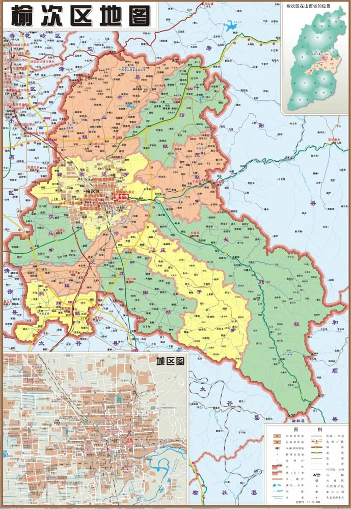
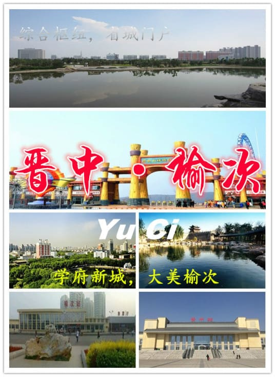

榆次区隶属于山西省晋中市，古称“魏榆”，位于山西省中部的太原盆地，东与寿阳县、和顺县交界，西同清徐县毗邻，南与太谷区接壤，西北与太原市相连，是晋中市的政治、经济、交通中心，面积1318平方千米。
榆次区西部与太原市小店区交界处建有太原武宿国际机场，素有“省城门户”之称。
榆次春秋时期称“涂水”、“魏榆”，战国时期称“榆次”。1948年设置榆次专区，1954年设榆次市。1999年9月24日，榆次市撤销，改称为晋中市榆次区。下辖9个街道、5个镇和4个乡，计71个社区、208个行政村。
市花月季，市树国槐。
根据第七次人口普查数据，截至2020年11月1日零时，榆次区常住人口为904518人。
2020年，榆次区地区生产总值完成300.7亿元（含开发区）。
榆次是山西省综合指标十强县市、国家级生态示范区、全国文化先进区、中国晋商文化之乡。其文化底蕴深厚，自然风光秀美，科教文化事业繁荣，各项经济指标常年居全市首位，是108综合发展廊带和全市四化发展的桥头堡和总引擎。
2019年3月，被列为第一批革命文物保护利用片区分县名单。
1954年将榆次县城关区改设榆次市。1958年，撤销榆次、寿阳2县，并入榆次市。1960年恢复寿阳县。1963年，撤销榆次市，恢复榆次县。1971年，恢复榆次市，榆次县迁驻长凝。1975年，榆次县迁驻榆次市。1983年7月28日，国务院批复同意撤销榆次县，将榆次县的行政区域并入榆次市。
1999年9月24日，国务院（国函〔1999〕124号）批复同意撤销晋中地区和县级榆次市，设立地级晋中市，市人民政府驻新设立的榆次区；晋中市设立榆次区，以原县级榆次市的行政区域为榆次区的行政区域，区人民政府驻东顺城街。
1996年，榆次区面积1328平方千米，人口约48万人。辖10个街道、5个镇、10个乡：晋华街道、安宁街道、北关街道、新华街道、新建街道、路西街道、锦纶街道、西南街道、经纬街道、修文街道、长凝镇、东阳镇、鸣谦镇、什贴镇、北田镇、沛霖乡、郭家堡乡、陈侃乡、张庆乡、使赵乡、山庄头乡、庄子乡、黄彩乡、东赵乡、石圪塔乡。
2000年第五次人口普查，榆次区常住总人口534357人，其中，北关街道14156人，锦纶街道45629人，新华街道19835人，修文街道2785人，西南街道14395人，路西街道35205人，经纬街道21305人，安宁街道44082人，新建街道18052人，晋华街道20021人，鸣谦镇23717人，东阳镇27478人，什贴镇8817人，长凝镇10530人，北田镇20686人，郭家堡乡73907人，使赵乡29325人，张庆乡31330人，沛霖乡12035人，庄子乡12160人，黄彩乡5139人，山庄头乡8146人，石疙瘩乡3378人，东赵乡10817人，陈侃乡21427人。
2001年初，撤销石圪塔乡、黄彩乡、沛霖乡、山庄头乡、使赵乡；石圪塔乡并入长凝镇，鸣谦镇、沛霖乡21个村合并设立乌金山镇，山庄头乡8个村、沛霖乡4个村并入什贴镇，山庄头乡4个村并入东赵乡，修文街道、陈侃乡、郭家堡乡5个村合并设立修文镇，庄子乡4个村并入北田镇，庄子乡18个村、黄彩乡合并为新的庄子乡，郭家堡乡18个村、使赵乡合并为新的郭家堡乡；调整后，榆次区辖9个街道、6个镇、4个乡。
2010年第六次人口普查，榆次区常住总人口635651人，其中，北关街道24165人，锦纶街道41713人，新华街道32581人，西南街道23173人，路西街道24238人，经纬街道20037人，安宁街道68045人，新建街道38634人，晋华街道50413人，乌金山镇33115人，东阳镇25936人，什贴镇12294人，长凝镇9477人，北田镇20250人，修文镇29183人，郭家堡乡70442人，张庆乡38595人，庄子乡12456人，东赵乡11184人，晋中经济开发区49720人。
2014年末，全区常住人口651895人。2015年末，榆次区辖9个街道、6个镇、4个乡（合计19个），67个居委会、265个村委会（合计332个）。

区划沿革
2021年4月，什贴镇整建制并入乌金山镇。
区划详情
截至2021年4月，榆次区下辖9个街道、5个镇、4个乡、1个社会服务中心，共有71个社区、208个行政村。
9个街道分别为：北关街道、锦纶街道、新华街道、西南街道、路西街道、经纬街道、安宁街道、新建街道、晋华街道。
5个镇分别为：乌金山镇、东阳镇、长凝镇、北田镇、修文镇。
4个乡分别为：郭家堡乡、张庆乡、庄子乡、东赵乡。

2017年12月12日，榆次区被国家民委办公厅确定为第三批“少数民族流动人口服务管理示范城市”。
2020年1月，入选2020中国礼仪百佳县市；入选2020中国春季休闲百佳县市
2020年9月29日，被交通运输部、财政部确定为“深化农村公路管理养护体制改革试点地区”。
2020年12月22日，入选全国第五批率先基本实现主要农作物生产全程机械化示范县（市、区）名单。
2021年1月18日，被国家卫生健康委命名为“2018-2020年全国计划生育优质服务先进单位”。
2021年6月21日，被农业农村部确定为全国农民合作社质量提升整县推进试点单位。
2021年11月，入选“四好农村路”全国示范县公示名单。